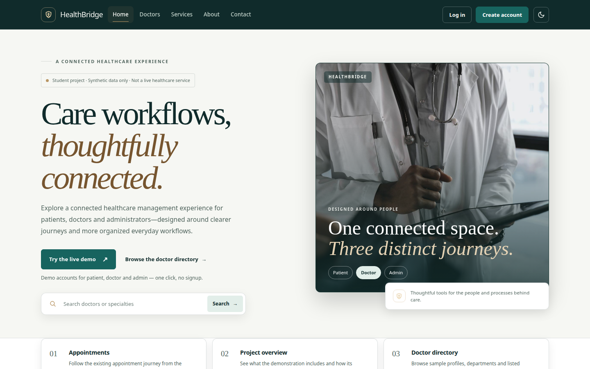
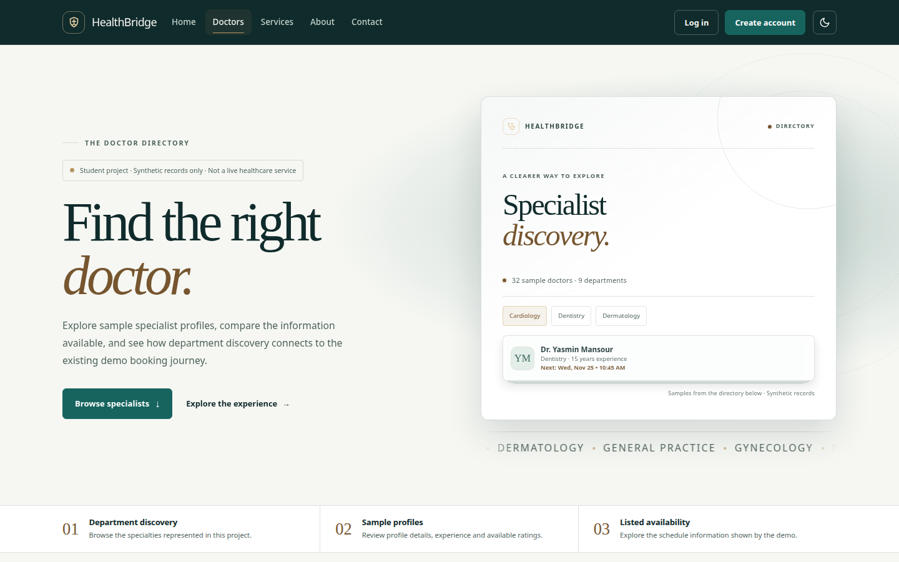
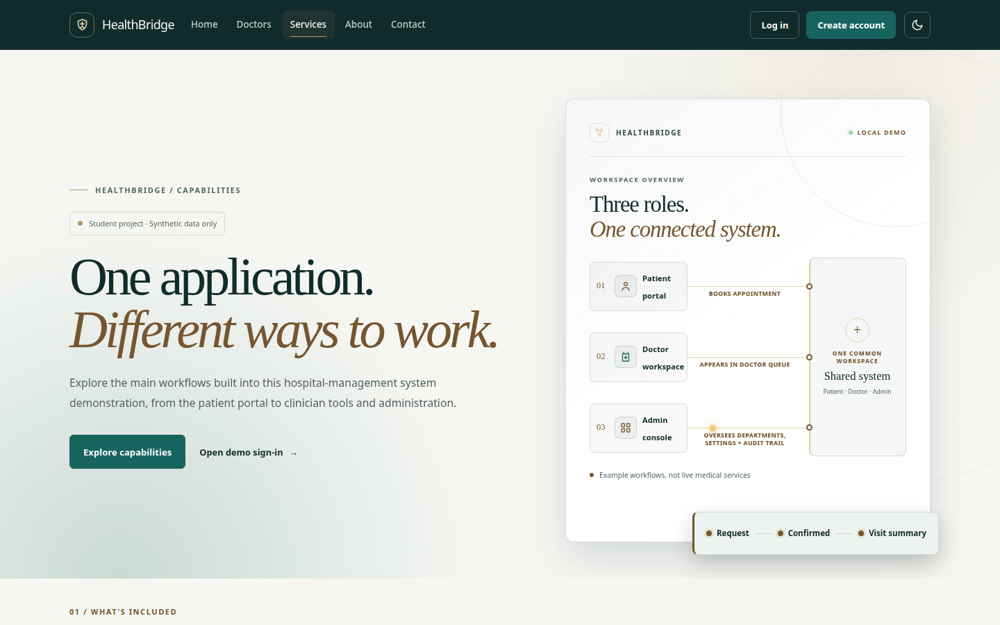
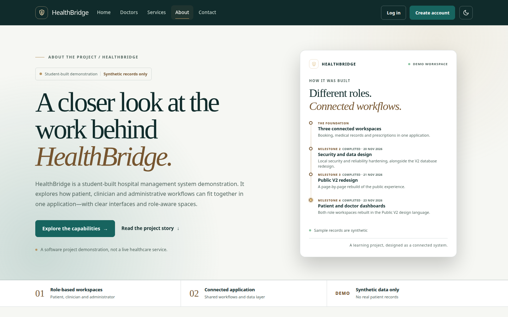
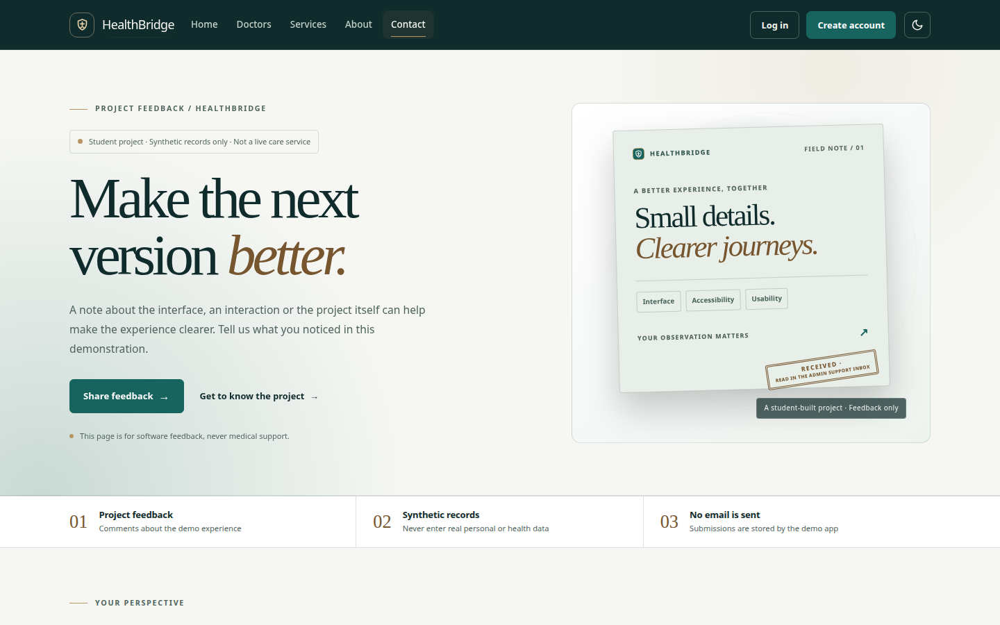
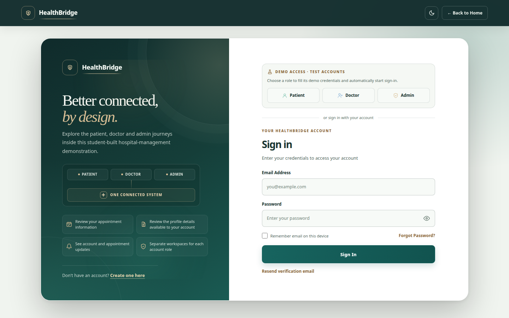
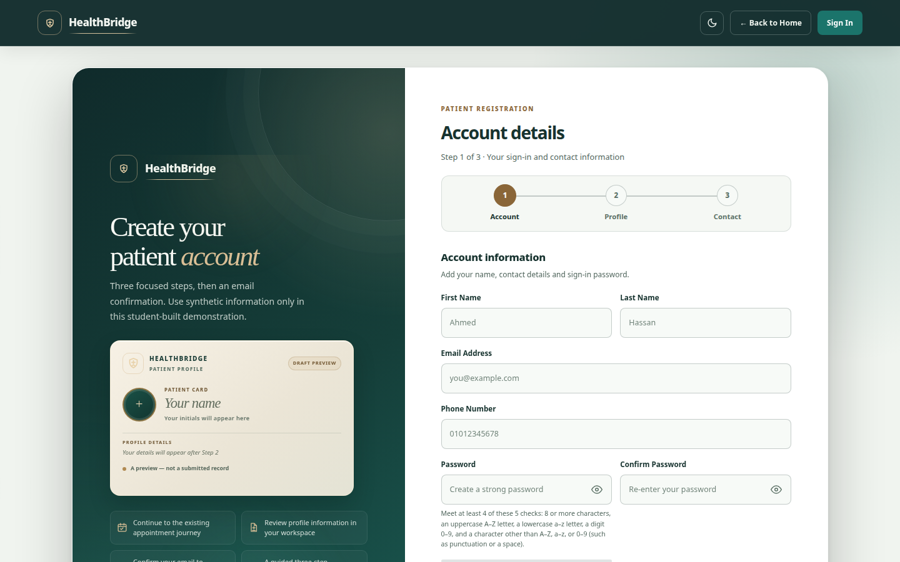
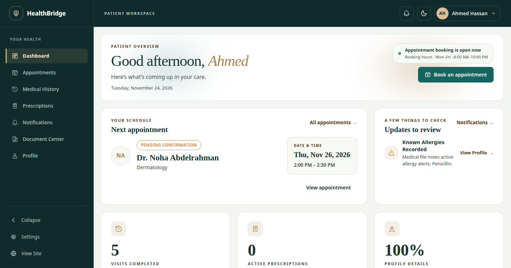
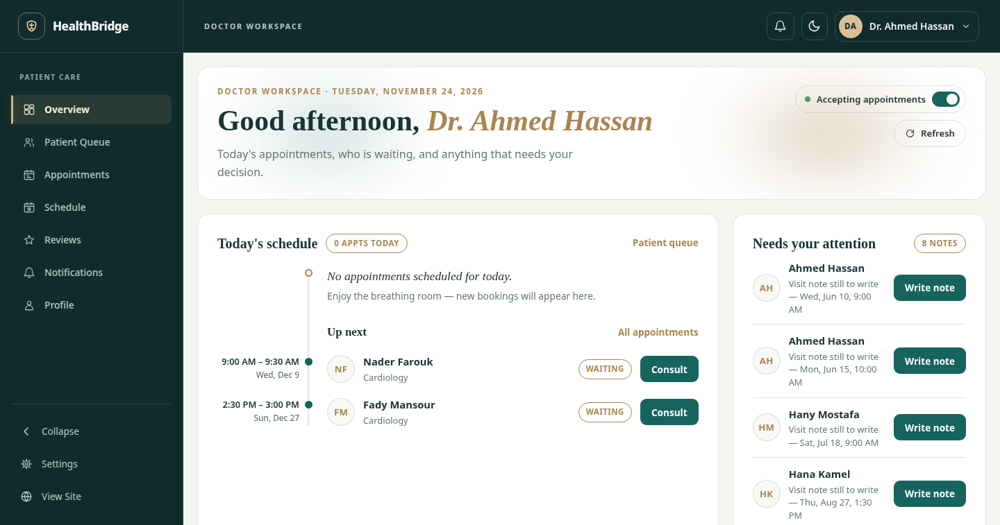
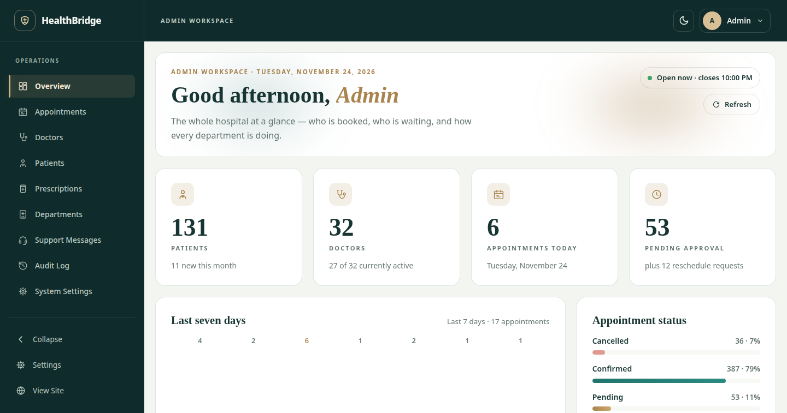

Find the right doctor
A public directory of 45 demo doctors across 9 departments, with department filtering, ratings, and each doctor's real availability drawn from their schedule.
Project case study · 02
Full-stack engineering / Healthcare platform
A hospital management platform that gives patients, doctors, and administrators one connected system — a public site and doctor directory, email-verified registration, three role-based dashboards, printable records, and background workers, built with PHP and MariaDB and deployed live.

01 / The project
HealthBridge is a full-stack hospital management platform. Patients find doctors and book visits, doctors run their day from a dedicated workspace, and administrators oversee departments, staff, and the audit trail — all reading and writing the same relational data.
The engineering challenge was separation without duplication: each role needs its own focused workspace, while appointments, prescriptions, and notifications have to stay consistent across all three. Access rules are enforced on the server for every request, so a patient can never reach a doctor's view of someone else's record by changing a URL or an ID.
02 / Patient experience
The patient journey is the spine of the platform; the other two roles exist to serve it.
A public directory of 45 demo doctors across 9 departments, with department filtering, ratings, and each doctor's real availability drawn from their schedule.
A guided wizard offers only slots inside the doctor's working hours, aligned to their slot length and breaks, so double-bookings cannot be created.
Sign-up is confirmed by email before the account exists. If the email, phone, or national ID is already registered, the form says so immediately instead of silently dropping the request.
Appointments, prescriptions with a medication tracker, notifications, and printable outputs — an appointment confirmation, a visit summary, and the full medical record.
03 / Doctor and admin workspaces
The doctor and admin areas were designed separately rather than stretched from the patient layout.
A bento-style dashboard with today's schedule, waiting patients, and the numbers a doctor checks first, in a collapsible shell.
The live patient queue and the appointment book answer different questions, so they remain different pages instead of one overloaded list.
Any doctor may view and print any patient's prescription in full — care is shared — but only the prescribing doctor can edit, complete, or cancel it. The rule is enforced in the service layer's SQL, not just hidden in the UI.
Doctor schedules validate against hospital hours (08:00–22:00). Resetting a schedule to the defaults is an admin-only action.
Hospital totals and appointment analytics are drawn with hand-built charts — no Chart.js — alongside doctor management, ratings moderation, and a read-only audit viewer.
Replies reach registered users inside the app. Messages from guests are clearly labelled undeliverable instead of pretending an email was sent.
04 / Implementation
The backend favors explicit, testable pieces over framework magic.
Object-oriented PHP with PDO prepared statements throughout. Business rules live in services; endpoints stay thin and answer with REST-style JSON.
A registration is stored encrypted in an intake queue and the account is created only when the email link is clicked. A worker processes the queue; a second check inside the worker still guards against races.
Email is written to an outbox first and delivered by a worker over Gmail SMTP, so a slow mail server never blocks a request. One scheduled task runs both workers every minute in production.
Session authentication plus per-endpoint role checks. During the audit, 21 live cross-role and cross-patient probes were fired at the running app — every one was refused correctly.
The public site and all three dashboards share one design system and shared components — the same pop-up treatment, the same notification behavior — with no legacy pages or assets left in the serving path.
Four print outputs share the platform's design language: appointment confirmation, visit summary, prescription, and the complete medical record.
05 / Verification and QA
Before deployment, the codebase went through a full review pass: a line-by-line audit of 105 API endpoints across 133 PHP files found zero verified high-severity issues, and the findings it did raise — an unprotected .env path, one password path skipping the shared validator, a rate limiter that failed closed — were fixed and re-verified.
A final freeze round added loading skeletons and request timeouts, corrected status bucketing for past appointments, and closed with a regression sweep of 76 page loads without a failure. The core palette measures at least 4.61:1 contrast (WCAG AA).
After deployment, the complete account lifecycle was proven on the live site: register, receive the verification email, confirm, sign in, book a Cardiology appointment, reset the password by email, and sign in again — followed by a live probe confirming duplicate registrations are refused up front with a clear message.
These are project-specific engineering checks and live probes, not a formal security certification or a published Lighthouse / Core Web Vitals score.
06 / Interface gallery
Captures from the completed interface, taken after full render.









07 / Product boundaries
The live site runs on a generated dataset — 45 doctors, 500 patients, and roughly 3,000 appointments with consistent schedules, prescriptions, and ratings — so every workflow can be explored end to end. The three demo accounts are public by design, and the data resets are part of the demonstration.
Those boundaries are deliberate: the case study documents a fully working multi-role system without dressing a portfolio project up as a production medical product.
Explore the project
The demo uses fictional shared data. Use the Demo Access buttons on the sign-in page to explore the patient, doctor, and admin workspaces, and never enter real personal details.
HealthBridge is a portfolio demonstration using fictional data. It is not a healthcare service.